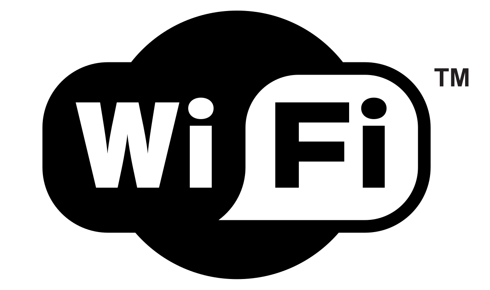

Google
Wikipedia
Internet Miejski Wrocław
Internet miejski we Wrocławiu
Za pomocą mapy niżej,nie znajdziesz darmowy WI-FI, ale możesz poużywać mapy googla :)
Zobacz, czym jest WI-FI
Albo posłuchaj, jak działa WI-FI